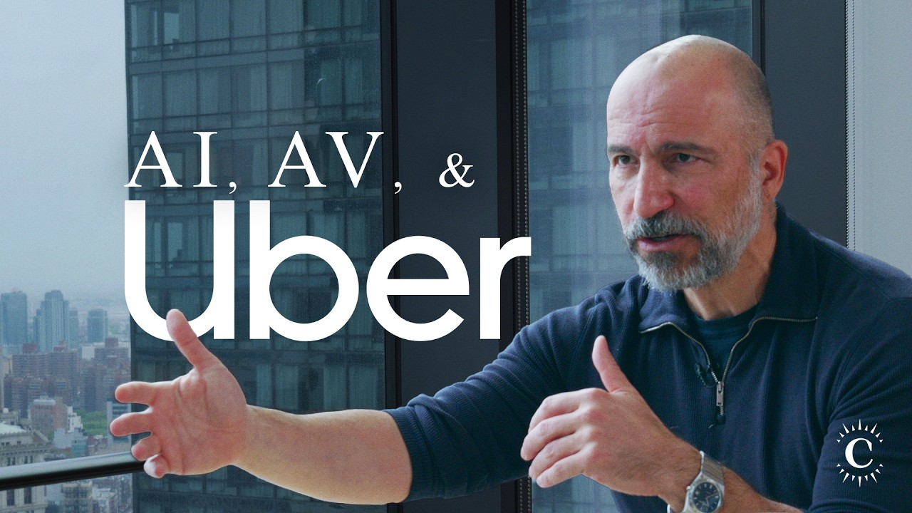

深度分析 · 把 Robotaxi 带到欧洲
来源：The Driverless Digest（Harry Campbell 主持）· 嘉宾 Markus Villig（Bolt 创始人兼 CEO）· 发布 2026-11-16 · 时长 30:33
📌 核心速览
这是一集把「欧洲为什么慢」讲得最具体的对话。Markus Villig 的判断是：欧洲 Robotaxi 的瓶颈不在算法，而在车——能通过欧盟整车型式认证、并满足逐国逐城审批要求的车。Bolt 的定位不是再造一套 L4，而是做欧洲的需求聚合方 + 系统集成商 + 首阶段车队持有者。
- 10 万辆是底线，不是目标上限。他认为欧洲可轻松部署数百万辆；10 万只是受监管约束后的「现实可达数」。
- 增量而非替代。欧洲网约车渗透率远低于美国，出租车牌照制度导致供给受限；Robotaxi 首先服务的是未被满足的需求。
- 自持车队是第一幕。监管要求运营商承担责任并证明安全，因此 Bolt 先自己拥有和运营；等残值、经济性被验证后，再进入车队合作的「第二幕」。
- 少数深伙伴，而非广撒网。美国可以对接 15 家，欧洲不行——逐城说服市长和监管者的工作无法并行复制。
- 地缘政治是新变量。欧洲监管者不愿受制于纯美国或中国技术，要求运营控制权与数据留在欧洲，这对供应商是架构级改造。
🔢 关键数据 / 事实速记
| 指标 | 数字 | 语境 |
|---|---|---|
| 2035 年目标 | 100,000 辆自动驾驶汽车 | Villig 称这是「下限 / 地板」，而非天花板 |
| 平台规模 | 600 万+次行程/日 | 约为全球同行的两倍；50+ 国家、2 亿+ 用户 |
| 财务体量 | ~150 亿美元总交易额、30 亿+美元营收 | 已盈利、持续增长，但仍未上市 |
| 人力成本差 | 0.5 欧元/公里（新兴市场）vs 2+ 欧元/公里（西欧出租车） | 决定了 AV 的经济性时间表在不同市场完全不同 |
| 特斯拉 FSD 欧洲时差 | 约 4 年 | 且 FSD 还不是 L4；Villig 据此推断 L4 延迟类似或更久 |
| 获批范围 | 欧盟 27 国中仅 7 国批准 FSD（当时） | 即便欧盟层面过审，仍需逐国、逐城推进 |
| 近期节奏 | 首批行程「未来 12 个月左右」 | 指小范围豁免试点（如 10 辆）；大规模部署仍需多年 |
| 资本需求 | 充电/清洁/维护基础设施数十亿美元；车队数百亿美元 | 正是在这里 Bolt 想建立「金融实力」 |
| Waymo 参照 | 4,000 辆在运营，1–2 年内或再增 5,000 辆 | Harry 用它说明车辆供给是全行业约束 |
🗝️ 关键金句（原文摘录，附时间戳）
“I suspect the software is going to be ready in a couple of years from many providers, but I think cars are going to be the limitation, especially cars that can clear the European regulatory bar.”
—— 00:00，也是全片收尾的呼应句：软件几年内就绪，瓶颈是能通过欧洲监管的车。
“We do want to get to the other side of the AV transition before we go public.”
—— 03:20：想在跨过自动驾驶转型之后再上市，以免在公开市场承受「99.5% 业务是人驾、但 100% 提问关于 AV」的错配。
“That's why we think it's ripe for disruption and why we think autonomous driving is going to make the most sense there at first.”
—— 07:02：美国网约车仍是全球竞争最弱、利润池最高的市场，因此最先被颠覆。
“We got to pick a few partners and really go very deep with them… you really are the system integrator.”
—— 20:40：欧洲必须少而深地绑定伙伴，因为逐城说服监管者的工作无法对 15 家公司并行复制。
“It's very heavily constraining the supply side… there's plenty of unserved demand in the market.”
—— 22:55：欧洲出租车牌照制度是「监管俘获」，造成大量未被满足的需求——AV 首先填补空白，而非抢司机饭碗。
一、Bolt 是谁：成本效率飞轮
Villig 2013 年从爱沙尼亚塔林起步，19 岁、刚高中毕业，自己写下第一版网约车软件并招募最初 50 名司机。公司的原始愿景是「取代私家车」：网约车、单车、滑板车、租车、外卖，构成城市出行生态。他自己没有驾照，每天使用自家产品。
他把 Bolt 的生意定义为「更像电商而不是 SaaS」——高频大众产品、占用户月度开支的大头，因此成本就是竞争力。逻辑链条是：
- 成本领先 → 可以给司机更高收入 → 吸引更多司机；
- 司机更多 → 接驾时间更短 → 服务更好；
- 服务更好 + 成本更低 → 可以给顾客更低价 → 需求再增长。
这个飞轮也解释了为什么 Bolt 不怕「弄脏双手」：过去七年它成为欧洲最大的电动车运营商之一，有内部硬件团队、中国制造团队、欧洲 200 多个仓库。这些运营能力，被它视为进入自动驾驶的入场券。
二、为什么先不上市：跨过 AV 转型
Harry 指出一个错位：Uber 最近一次财报电话会上，70% 的投资者提问关于自动驾驶，但其 99.5% 的业务仍是人驾网约车与配送。Villig 的回应是，Bolt 想先跨过 AV 转型「另一边」再上市——看看现有上市同行的处境和市场情绪，这是个不错的决定。
短期内 Bolt 对 AV 冲击有缓冲：产品组合横跨微出行、外卖、租车、网约车；市场覆盖 50 多国，其中大量是低客单价新兴市场（南非、尼日利亚、泰国等），人力成本约每公里 0.5 欧元，AV 需要很久才能到达这个价位。即便在西欧出租车每公里 2 欧元以上的高成本市场，监管也会是主要抑制因素。
三、不造 L4，做欧洲的系统集成商
Villig 明确划出边界：坚持做世界级擅长的事——运营、用户层、监管渠道，以及「唯一还具备相当规模的欧洲出行公司」这一身份。技术侧交给全球最好的 L4 栈提供商和 OEM。
他不排除未来变化：随着 AI、编程、机器学习的进步，以及中国 L4 公司普遍认为技术几年后会变成大宗商品，自建 L4 的成本可能大幅下降。但即便如此，若供应商足够多，也没有必要自己做。这与英伟达推动开源的方向一致——多方都有动机不让 L4 被一两家垄断。
定位的关键差异：美国市场可以广撒网对接多家 AV 公司；欧洲不行。因为真正的工作不是接 API，而是带着技术与车辆去见监管者、证明安全、逐城说服每位市长和成员国，解释技术、运营方式、责任归属。这件事无法对 15 家公司并行完成。
四、伙伴矩阵：小马智行 × Stellantis × 英伟达 × Lucid
| 合作方 | 角色 | 进展 |
|---|---|---|
| 小马智行（Pony AI） | L4 自动驾驶技术 | 卢森堡，车辆已上路，测试载客阶段，仍有安全员 |
| Stellantis | 车辆提供方 | 与小马智行同在卢森堡项目 |
| 英伟达（NVIDIA） | 算力 / 中央计算栈标准化 | 下一步考察马德里；推动标准化以破解「鸡生蛋」 |
| Lucid | 车辆 | 与英伟达组合，考察马德里 |
| 巴黎 | 市场准入 | 刚获首批许可，未来两年内部署 |
三方之外还有一层正在成形的基础设施：充电、清洁、维护。Villig 估计欧洲需要建设数十亿美元级别的相关设施，车队本身则需要数百亿美元资金。Bolt 想在这里积累「金融实力」，而不仅是技术对接。
五、欧洲门槛：技术障碍还是监管障碍？
Harry 提出一个常见框架：L4 部署究竟卡在技术还是监管？Villig 的答案是「很难拆开」——欧洲监管者对消费者安全和道路安全的要求显著高于世界其他地区，这本身就要求技术更成熟。
- 门槛更高：美国和中国被允许做首批试点、载客的技术水平，在欧洲不足以过审。
- 流程更重：欧盟层面整车型式认证极其棘手，且当时「没有人真正启动了这个流程」。
- 时间参照：特斯拉 FSD 在欧洲上线比美国晚约四年，而它还不是 L4。
- 逐国逐城：FSD 当时仅在 27 个成员国中的 7 个获批；欧盟过审后仍需逐国、逐城推进。
- 实证周期：即便技术达标，拿出全部安全证据仍需一到三年才能大规模部署。
再加上地缘政治：欧洲监管者不愿受制于纯美国或中国技术，希望看到运营控制权、数据不离开欧洲。对供应商而言，这是技术架构层面的改动，而非简单合规文书。
六、10 万辆的由来：自持车队与第一/第二幕
第一阶段：自己拥有并运营。理由有二：必须有人率先证明技术按预期运行；监管者要求运营商承担责任。Villig 认为，至少在欧洲，没有其他人同时具备这种财务实力和运营能力。
第二阶段：车队合作。当技术被充分验证、残值被证明、经济性成立，就可以引入各类车队持有车辆——就像今天欧洲很多市场的做法。他把这称为行业的「第二幕」。
10 万辆这个数字来自三重约束：监管获取市场的难度、劳动力替代的政治压力，以及车辆供给。而 Villig 强调，从欧洲近 5 亿人口、高收入水平的体量看，真正的机会是数百万辆。
七、人机共存：未满足需求而非替代
Villig 对劳动力议题很敏感：Bolt 总部在欧洲，平台上有数十万乃至数百万司机，他们的长期收入至关重要；欧洲政治对劳动力被取代的敏感度远高于世界其他地区。
他的核心论证是：欧洲网约车渗透率远低于美国，并非欧洲人不愿使用，而是陈旧的出租车牌照制度构成「监管俘获」，严重限制供给。多数欧洲大城市仍沿用类似纽约 medallion 的制度。结果是大量需求未被满足——AV 进入市场主要服务这些空白，因此第一阶段不会蚕食人类司机。
结论是：欧洲会长期处于人机混合市场，并在未来二十年逐步向 AV 过渡。Harry 补充说，在需求受限的市场里加入 AV，比在已充分满足的市场里更容易扩大 TAM——Villig 确认，这正是 10 万辆测算的依据之一。
关于劳工反弹，Villig 指出事实：当时欧洲零例无安全员的商业自动驾驶行程，行业处于约等于美国四五年前的早期阶段。真正的反弹可能要到大规模部署后、且在真正取代人力的城市才会出现。
八、真正的瓶颈：车辆供给与标准化
Harry 用 Waymo 作参照：4,000 辆在运营，未来一两年或再增 5,000 辆，即使是它也需要迅速放大规模。Villig 回应称「车辆这一层得到的关注远远不够」，并指出症结是一个先有鸡还是先有蛋的问题：
- 早期 L4 玩家要求高度专有的车辆栈；
- 传统车企为单一客户投入约 5 亿美元设计定制车、建产线，门槛极高；
- 而客户往往还不愿给出有意义的量产承诺——前期投资无法合理化。
出路是标准化。这正是 Bolt 与英伟达合作的方向：在算力、电气系统、中央计算栈上定义标准，使 OEM 按标准造出的车能被多家 L4 供应商共用。这样鸡生蛋问题才有解，OEM 才愿意做达到量产规模所需的投资。
九、如果只能改变一件事
最后一个问题：打一个响指能加速 AV 普及，会改什么？Villig 的回答与开场完全呼应——加快车辆生产。因为 OEM 仍不愿承担风险、今天就开始研发；软件几年内会由多家供应商准备就绪，真正的限制是车，尤其是能通过欧洲监管门槛的车。
📚 更多收藏




🔗 关联阅读
- AV 车队的数据传输瓶颈：Virewirx CEO Jason Fiber 谈 60GHz 无线与 depot 运营 —— 同一播客，讲车队基础设施的资本与运营门槛。
- Uber AV 战略负责人 Rojas：平台如何同时对接多家自动驾驶供应商 —— 与本期「少数深伙伴」策略形成直接对照。
- 英国自动驾驶许可制度：监管如何决定 Robotaxi 落地速度 —— 欧洲监管主题的延伸。
👥 适合谁听
关注欧洲 Robotaxi 落地节奏的从业者、网约车平台战略与运营团队、自动驾驶公司做欧洲市场准入的负责人、研究监管与地缘政治对技术扩散影响的研究者，以及想理解「为什么技术可用了却还不能上路」的普通听众。
局限与说明
本页基于 2026-11-16 发布的播客整理，所有数字与判断均为嘉宾在节目中的陈述，未经独立核实，也不代表整理者立场。欧洲监管与许可状态变化很快，文中「当时」的表述请以官方最新公告为准。英文来自 Substack 官方逐字稿，中文为机器翻译并经专有名词校对；完整对话请见中英对照逐字稿。